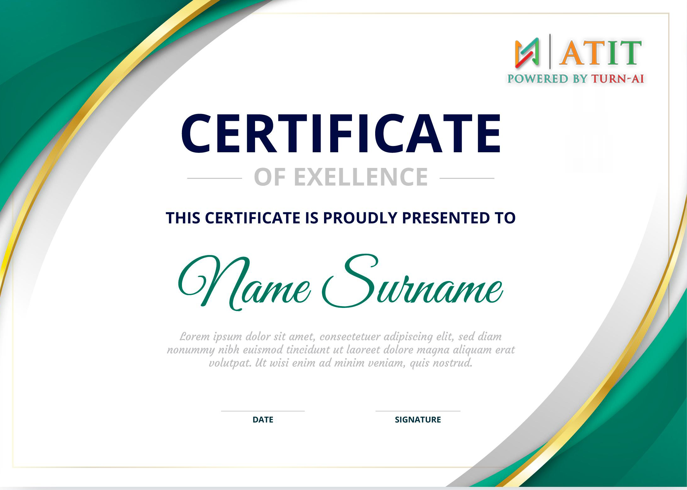

Real time DevOps project training
Average salary for DevOps engineers in India - Rs.12 Lakhs Per Annum
About DevOps Course
ATIT DevOps Training will help you master and build your DevOps skills with tools that matter - Docker Networks, Development Cycles, Puppet, Ansible, Chef, Vagrant, Jenkins, Nagios, and more. Instructors of ATIT are experts at teaching both the essentials and finer points of DevOps Concepts. This course will take through the practical aspects of DevOps and help you to apply these practices in real-world project examples. Enroll in our DevOps certification course to transform your career into a DevOps Engineer.
Experience the unparalleled edge of real-time project training – exclusive to us, as no other institutes can match our offering.
Course Includes
75 Hours of Sessions
Flexible Schedules
24/7 Lifetime Support
Certification Oriented Curriculum
FREE Demo on Request
One-on-One Doubt Clearing
Real-time Project Use cases
DevOps Course Content
This DevOps, training curriculum covers the introduction to DevOps, Continuous Integration Automation, Continuous Deployment, understanding of various categories of DevOps tools like Development Life Cycle Management, configuration management tools, Source code management, Automation tool, and Continuous monitoring tools. It also covers essential tools like Chef, Introduction to Docker, Integration of Docker, Docker Swarm, Jenkins, Nagios, etc.
- Introduction to Operating Systems
- Introduction to Virtualization & Virtual Machines
- Setup a Linux Virtual Machine
- Linux File System
- Introduction to Command Line Interface (CLI - Part 1)
- Basic Linux Commands (CLI - Part 2)
- Package Manager - Installing Software on Linux
- Working with Vim Editor
- Linux Accounts & Groups (Users & Permissions Part 1)
- File Ownership & Permissions (Users & Permissions - Part 2)
- Introduction to Shell Scripting Part
- Environment Variables
- SSH - Secure Shell
- Terminology and concepts related to the AWS platform
- How to navigate the AWS Management Console
- Key concepts of AWS security measures and AWS Identity and Access Management (IAM)
- What some of the key AWS services are, including: Foundational services: Amazon Elastic Compute Cloud (Amazon EC2), Amazon Virtual Private Cloud (Amazon VPC), Amazon Simple Storage Service (Amazon S3), and Amazon Elastic Block Store (Amazon EBS)
- Database services: Amazon DynamoDB and Amazon Relational Database Service (Amazon RDS)
- Management services: including AWS Auto Scaling, Amazon CloudWatch, Elastic Load Balancing (ELB) and AWS Trusted Advisor
- AWS Associate Architect Certification(Tips & Tricks to clear certification)
- Introduction to Terraform
- Terraform Basics
- Terraform with AWS
- Advanced Terraform Usage
- Module Development
- Hashicorp Certification (Tips & Tricks to clear certification)
- Introduction to Docker
- Architecture of Docker and its components
- Use of Docker
- Dockerfile
- CICD with Docker
- Introduction to CI/CD (what is DevOps ??)
- Getting started with Git/Gitlab/Bitbucket (versioning tech stack)
- Getting Started with Jenkins (Continuous Integration and Continuous Deployment)
- Getting Started with Maven (how to make Build)
- Getting Start with Ansible (Configuration Management)
- Role of Continuous Testing in CI/CD
- Introduction to SonarQube for Code Quality Improvement
- Design and build end to end CI/CD pipeline using git, terraform, ansible, Jenkins etc
- Introduction to Prometheus
- Introduction to Grafana
- Monitoring with Prometheus and Grafana
Training Options
Choose your own comfortable learning experience.
Whether you choose to learn online or offline, we're excited to have you as part of our DevOps community and look forward to helping you advance your career in the world of DevOps!
Online Classes
In today's digital age, DevOps has become an essential practice for organizations looking to streamline their software development and IT operations. This online course is designed to provide you with the knowledge and skills needed to excel in the world of DevOps, all from the comfort of your own home or office.
Course Highlights:
✔️ Flexible Learning: Learn at your own pace, and access course materials 24/7.
✔️ Expert Instructors: Our experienced instructors will guide you through the latest Manual Testing concepts, tools, and best practices.
✔️ Interactive Learning: Engage in discussions, collaborate with fellow learners, and work on hands-on projects to reinforce your understanding.
Join us online and embark on a journey to master Manual Testing, ensuring you are well-equipped to meet the demands of the ever-evolving tech industry.
Offline classes
In a world dominated by screens and virtual interactions, there's something special about coming together in person to learn and collaborate. Our DevOps class is designed to provide you with a hands-on, immersive experience that will empower you to become a DevOps expert..
Course Highlights:
✔️ Face-to-Face Interaction: Interact directly with instructors and fellow learners, fostering a supportive and collaborative learning environment.
✔️ Networking: Build valuable professional connections with your peers, instructors, and industry experts.
✔️ Physical Resources: Access to physical resources, tools, and equipment for a more comprehensive programming experience & learning experience
Join us offline concepts and practices, and leave with the skills and confidence to excel in the field of Manual Testing.
DevOps Certification
Show the world that you have pursued one of the best in the industry
Genuine Feedback
Outcome of our Quality Training